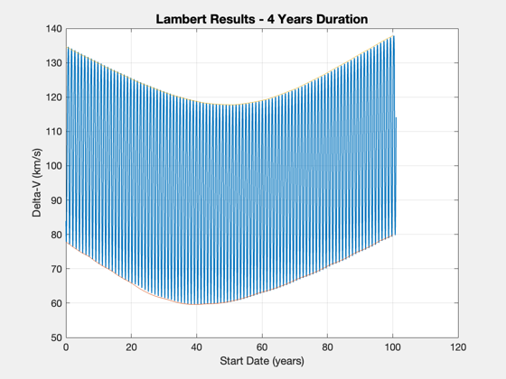
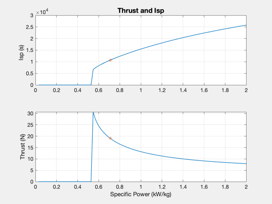
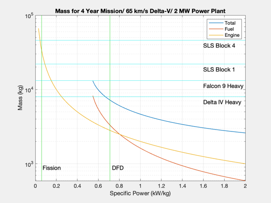
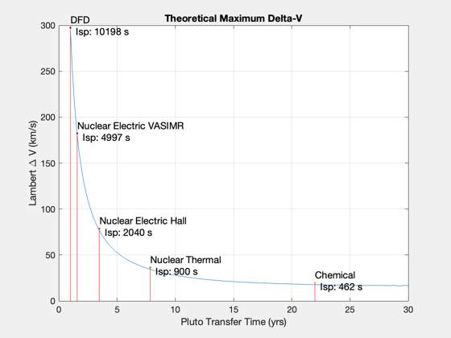

Design a Pluto mission using DFD
Perform a Lambert analysis for trajectories over a number of years, considering the true planetary positions (from the almanac).
------------------------------------------------------------------------ See also Constant, Plot2D, TimeDisplay, Date2JD, Mag, LambertTOF, RocketMass, PlanetPosition ------------------------------------------------------------------------
Contents
%-------------------------------------------------------------------------- % Copyright (c) 2015 Princeton Satellite Systems, Inc. % All Rights Reserved. %-------------------------------------------------------------------------- % Since 2016.1 %-------------------------------------------------------------------------- % Parameters mP = 1000; % payload mass (kg) kWPerKg = 0.71; % specific power tankF = 0.02; % ratio of tank mass to fuel mass eff = 0.5; % Power to thrust conversion efficiency % Specify a delta-V for comparison dVTotal = 65; % km/s fDuration = 0.15; % fraction of duration that is burn time power = 2e3; % kW % Constants muSun = Constant('mu sun'); muPluto = Constant('mu pluto'); rPluto = Constant('equatorial radius pluto'); g = 9.806; % Epoch jD0 = Date2JD([2016 1 1 0 0 0]); PlanetPosition( 'initialize', [3 9] ); h = 600; % orbital altitude at Pluto (km) dVOrbit = sqrt(muPluto/(rPluto+h)); % launch vehicle mass to heliocentric orbit k = 1; lV{k,1} = 8000; lV{k,2} = 'Delta IV Heavy'; k = k + 1; lV{k,1} = 13200; lV{k,2} = 'Falcon 9 Heavy'; k = k + 1; lV{k,1} = 22000; lV{k,2} = 'SLS Block 1'; k = k + 1; lV{k,1} = 46000; lV{k,2} = 'SLS Block 4'; k = k + 1;
Lambert Analysis - varying start date, fixed duration
nYears = 4; nA = 100; nPP = 25; start = linspace(0,nA); nS = length(start); duration = nYears*365.25; % days dVs = zeros(1,nS*nPP); dVMax = zeros(1,nS); dVMin = zeros(1,nS); p = 1; time = zeros(1,nS*nPP); for j = 1:nS dVThis = zeros(1,nPP); for k = 1:nPP days = (k-1)*365/nPP; time(p) = start(j)*365.25+days; jDS = jD0+start(j)*365.25+days; [r0, ~, v] = PlanetPosition( 'update', jDS ); [rI, ~, vI] = PlanetPosition( 'update', jDS+duration ); [vT, a] = LambertTOF( r0(:,1), rI(:,2), duration*86400, 1, muSun ); dV = Mag(vT(:,1) - v(:,1)) + Mag(vT(:,2) - vI(:,2)); dVs(p) = dV + dVOrbit; dVThis(k) = dVs(p); p = p+1; end dVMin(j) = min(dVThis); dVMax(j) = max(dVThis); end Plot2D(time/365,dVs,'Start Date (years)','Delta-V (km/s)',sprintf('Lambert Results - %d Years Duration',nYears)) hold on plot(start,dVMin) plot(start,dVMax)
Compare DFD to fission electric (Vasimr type engine) - Specific Power Plot
Specify a duration of the mission. Specify the amount of the duration that is burn time. Exhaust velocity is driven by the thrust.
tol = 10; specificPower = linspace(0.03,2); nP = length(specificPower); mT = zeros(1,nP); mE = zeros(1,nP); mF = zeros(1,nP); uE = zeros(1,nP); thrust = zeros(1,nP); duration = nYears*365.25*86400; % Calculate thrust needed to achieve delta-V in the specified burn duration; % use the power equation to compute exhaust for k = 1:nP dM = 100; mE(k) = power/specificPower(k); mD = mE(k) + mP; % add payload mass mT(k) = mD; mFOld = 0; while( dM > tol ) % average mass includes 1/2 the fuel mAv = mT(k) - 0.5*mFOld; thrust(k) = mAv*dVTotal*1000/(fDuration*duration); uE(k) = 2*power*1e3*eff/thrust(k); % Power needs to be in W try [mF(k),mT(k)] = RocketMass( uE(k)/g, mD, tankF, dVTotal ); dM = abs(mF(k)-mFOld); accel = thrust(k)/(mT(k) - 0.5*mF(k)); catch mF(k) = 0; mT(k) = 0; thrust(k) = 0; uE(k) = 0; dM = -1; end mFOld = mF(k); end end
Plot
Plot2D(specificPower,[uE/g;thrust],'Specific Power (kW/kg)',{'Isp (s)','Thrust (N)'},'Thrust and Isp') uE_dfd = interp1(specificPower,uE/g,kWPerKg); subplot(2,1,1) hold on plot(kWPerKg,uE_dfd,'*'); subplot(2,1,2) hold on thrust_dfd = interp1(specificPower,thrust,kWPerKg); plot(kWPerKg,thrust_dfd,'*'); titlestr = sprintf('Mass for %d Year Mission/ %d km/s Delta-V/ 2 MW Power Plant',nYears,dVTotal); [~,hA] = Plot2D(specificPower,[mT;mF;mE],'Specific Power (kW/kg)','Mass (kg)',titlestr,'ylog'); xLim = get(gca,'xlim'); yLim = get(gca,'ylim'); % launch vehicle for k = 1:4 line(xLim, [lV{k,1},lV{k,1}],yLim,'color',[0 0.9 0.9]); text(0.8*xLim(2),0.85*lV{k,1},lV{k,2},'fontsize',12); end line(kWPerKg*[1 1], yLim,'color',[0 0.8 0]); text(1.03*kWPerKg, 1.5*yLim(1),'DFD','fontsize',12); line([0.06 0.06],yLim,'color',[0 0.8 0]); text(0.07,1.5*yLim(1),'Fission','fontsize',12); set(gca,'fontsize',11) legend(hA.h,{'Total','Fuel','Engine'}) 
DV and duration analysis
DFD, Nuclear Electric, Nuclear Thermal, Chemical
k = 1;
tech{k} = 'Chemical'; uETech(k) = 462*g; k = k + 1;
tech{k} = 'Nuclear Thermal'; uETech(k) = 900*g; k = k + 1;
tech{k} = 'DFD'; uETech(k) = 100e3; k = k + 1;
tech{k} = 'Nuclear Electric Hall'; uETech(k) = 20e3; k = k + 1;
tech{k} = 'Nuclear Electric VASIMR'; uETech(k) = 49e3;
[r0, ~, v] = PlanetPosition( 'update', jD0 );
% Delta-V analysis considering location of Pluto
disp('Run loop over start dates and mission duration...')
years = linspace(1,30,200);
nY = length(years);
start = linspace(0,20*365,600);
nS = length(start);
dVTotal = zeros(1,nY);
TimeDisplay( 'initialize', 'Pluto Lambert Loop', nY );
for k = nY:-1:1
dVJ = zeros(1,nS);
for j = 1:nS
jDS = jD0+start(j);
[r0, ~, v] = PlanetPosition( 'update', jDS );
duration = years(k)*365.25; % days
[rI, ~, vI] = PlanetPosition( 'update', jDS+duration );
[vT, a] = LambertTOF( r0(:,1), rI(:,2), duration*86400, 1, muSun );
dV = Mag(vT(:,1) - v(:,1)) + Mag(vT(:,2) - vI(:,2));
dVJ(j) = dV + dVOrbit;
end
dVTotal(k) = min(dVJ);
TimeDisplay('update');
end
TimeDisplay('close');
disp('Done.')
Plot
figure('Name','Theoretical Maximum Delta-V') plot(years,dVTotal) grid on xlabel('Pluto Transfer Time (yrs)','fontsize',12); ylabel('Lambert \Delta V (km/s)','fontsize',12); title('Theoretical Maximum Delta-V','fontsize',14,'fontweight','bold'); maxDV = uETech*log((1+tankF)/tankF)/1000; hold on; for k = 1:length(uETech) str = sprintf('%s\n Isp: %.0f s',tech{k},uETech(k)/g); j = find(dVTotal < maxDV(k),1); if ~isempty(j) line([years(j);years(j)],[0,dVTotal(j)+2],'color',[1 0 0]); text(years(j),4+dVTotal(j),str,'fontsize',12); p(k) = plot(years(j),2+dVTotal(j),'.'); end end set(gca,'fontsize',11) %-------------------------------------- % $Id: 5df5853d99a17ac3aaee6601552a0f2d04f0d43e $
Run loop over start dates and mission duration... Done.